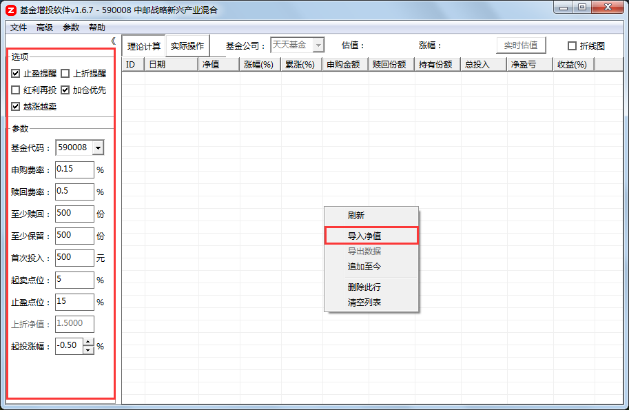
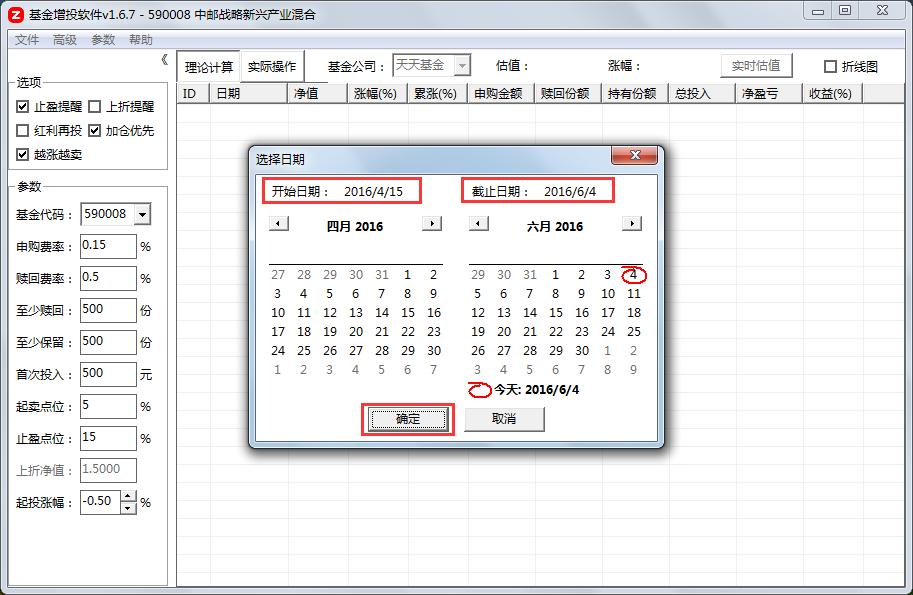
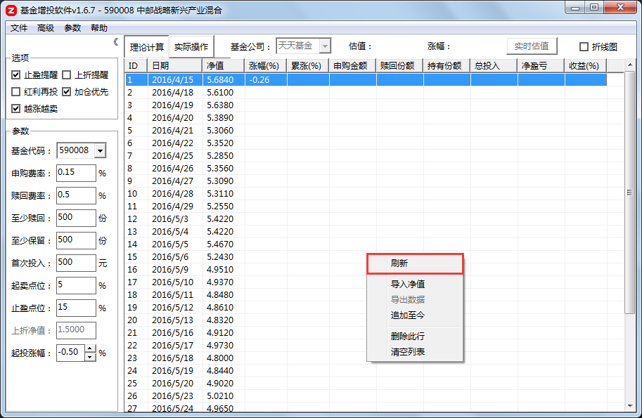
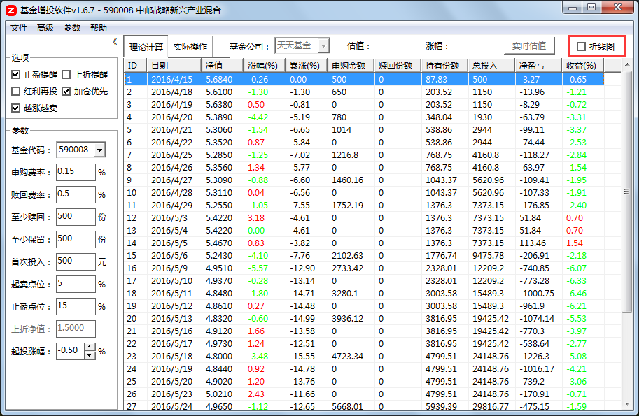
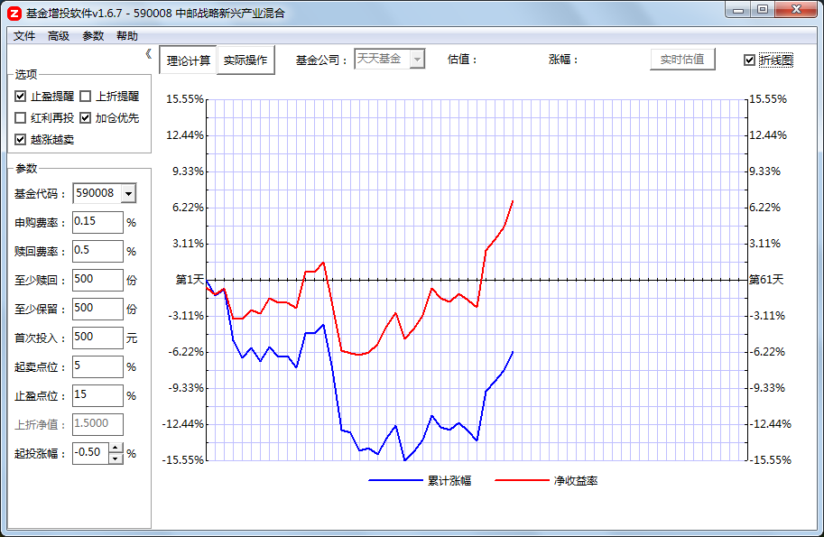

基金代码：基金代码是一组6位数字，是监管备案的唯一标示。各银行、基金、理财资讯等网站都据此组织数据。
申购费率：申购费率就是投资者在基金成立后，购买基金份额时，需支付的申购费用的比率。具体要以购买渠道显示的为准。
赎回费率：赎回费率就是投资者向基金公司卖出基金份额时，支付给基金公司的赎回手续费的比率。具体要以购买渠道显示的为准。
基金净值：(基金总资产-基金总负债每股收益)/基金份额总数。
至少赎回：某基金的单次最少赎回份额。比如有些基金的最少赎回份额是10份，则小于10份的赎回操作将不被受理。
至少保留：某基金的最少保留份额。比如有些基金公司规定，如果剩余份额不足100份，则必须全部赎回。
首次投入：增投法购买基金的首次申购金额，建议不超过自己能长期支配的流动性资金总量的百分之一，比如你有5万元在银行卡活期或者余额宝中，并未购买任何理财产品或股票或基金，则首次投入应设为500元。如果有2万元购买了1年定期或者其他到期前不能取出的理财产品，则不应算在资金总量中，首次投入应设为300元。
起卖点位：投入资金的整体收益率超过该值时，才开始进行赎回操作并计算赎回份额的盈利百分比。
止盈点位：当收益率超过该值时，对基金进行全部赎回操作的盈利百分比。
上折净值：不同的分级基金上折净值是不同的，勾选上折提醒后即可修改，分级基金母基金上折时会有两个交易日无法申购和赎回，无形中增加了风险。
起投涨幅：基金代码是一组6位数字，是监管备案的唯一标示。各银行、基金、理财资讯等网站都据此组织数据。①勾选加仓优先时，若当天涨幅（下跌时涨幅为负）大于该值则不进行加仓操作；②不勾选加仓优先时，若当日净值相比上一次加仓时的净值的涨幅（若下跌则涨幅为负）大于该值则不进行加仓操作。
倍数：本次加仓金额与上一次加仓金额之比。
加倍：加大购买力度，加倍越大，加仓金额越大。
止盈提醒：勾选后可以设置止盈点，当收益率达到止盈点后弹窗提示；若不勾选则不提醒。
上折提醒：勾选后可以修改上折净值，当分级基金母基金的估值大于触发上折的净值时弹窗提醒；若不勾选则不提醒。
红利再投：新申购的基金默认的分红方式一般是现金分红，为了与基金公司保持一致，此选项一般不勾选；若您已在购买渠道将该基金的分红方式改为红利再投，则此处应该勾选，以保证软件的计算结果与基金公司一致。
加仓优先：勾选后能更快地降低持仓成本，但是会加快资金的消耗，适合周期不太长的暴跌反弹行情，不适合持续数月的单边下跌行情。若行情未知且对软件不熟悉，建议不要勾选。
越涨越卖：勾选后可以设置起卖点位和最少卖出份额、最少保留份额，当你投入的资金整体盈利后，软件会根据这两个参数自动计算卖出份额。此选项的目的在于对抗长期的持续性上涨带来的风险，以牺牲一些盈利作为代价来减少行情逆转时的损失。
保证追加：勾选后，当加仓金额不能明显有效降低持仓成本时，加大投入。不勾选则不加大，好处是不会加速资金消耗，坏处是买到的底部筹码偏少。
理论计算：排除一切人为因素的干扰，严格按照设定参数计算申购金额和赎回份额。
实际操作：仅作为记录每日实际操作的用途使用。双击列表单元格即可修改单元格内容。
折线图：勾选后将列表中的累计涨幅和收益率以折现图的形式显示出来。
第一步：查询欲购买基金的六位数字基金代码，并查询购买渠道的申购费率、赎回费率、每次最少赎回多少份额、最少保留多少份额。例如中邮战略新兴产业股票基金的代码是590008，其在蚂蚁聚宝的申购费率是0.15%，赎回费率是0.5%（1年以内），每次最少赎回500份，最少保留500份。
第二步：在基金代码输入框输入六位数字基金代码（激活输入框后，使用Ctrl+Delete组合键可以将当前代码从列表中删除），并输入申购费率、赎回费率，勾上止盈提醒、加仓优先（新手实际操作中不要勾选，回测历史数据则无所谓）、越涨越卖和保证追加，根据基金类型自行判断是否勾选折算提醒和红利再投，修改最低赎回份额、最少保留份额，然后根据自己手中的流动资金的资金量（不包括短期时间内无法挪用的资金）计算首次投入（资金量的百分之一）并填入，根据自己的预期设定相应的起卖点位、止盈点位、起投涨幅、倍数和加倍等。
第三步：在列表空白处右键单击，弹出右键菜单后单击导入净值选项。

第四步：在弹出的日期窗口中选择开始日期和截止日期，然后单击确定。一般选择2015年6月15日、8月18日、12月23日、2016年2月23日、4月15日这种阶段高点之后的下跌第一天作为开始日期。

第五步：列表中出现数据后，对着列表右键单击，弹出右键菜单，单击刷新。软件会自动根据各选项?筒问�计算每天的申购金额或赎回份额，以及其他数据�?/p>


第六步：勾选右上角的折线图选项，隐藏列表数据，显示折线图；取消勾选则隐藏折线图，显示列表数据。

做T拿回本金：此功能的作用就像股票中的做T，在已有份额的情况下，T日申购，T+1日赎回相应的份额，可以突破基金申购T+2才能赎回的限制。此功能的目的是通过频繁做T将亏损严重的基金的本金一点一点取出来。例如昨天申购了10000元，今天该基金涨3%，则不考虑手续费的话，今天盈利300元，此功能的作用就是计算出当初投入多少资金会刚好亏损300元，进而把两部分资金一起取出，实现取出本金、降低仓位的作用。
降低持仓成本：此功能仅在实际操作选项下有效。若您已经有了一定的收益，想要赎回一部分本金以降低持仓成本，那么可以使用该功能快速计算需要赎回的份额。
重算首次投入：此功能的目的是当投资到一半却不得不改变选项和参数时，通过改变首次投入使新的理论计算总投入与原来的总投入一致，然后根据新的参数将增投继续进行下去。之所以修改首次投入，是为了改变选项和参数后依然能在净值最低的时候投入最多的资金。
查看最新走势：查看当天或最近一个交易日的全天净值走势。